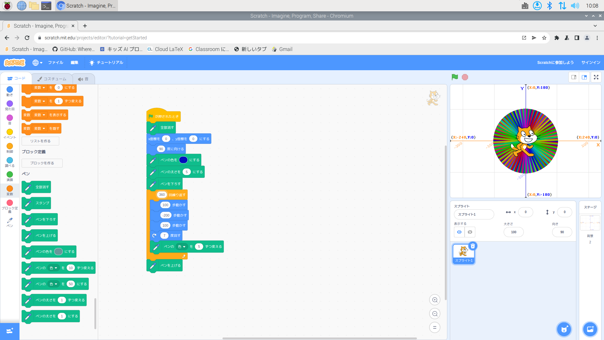
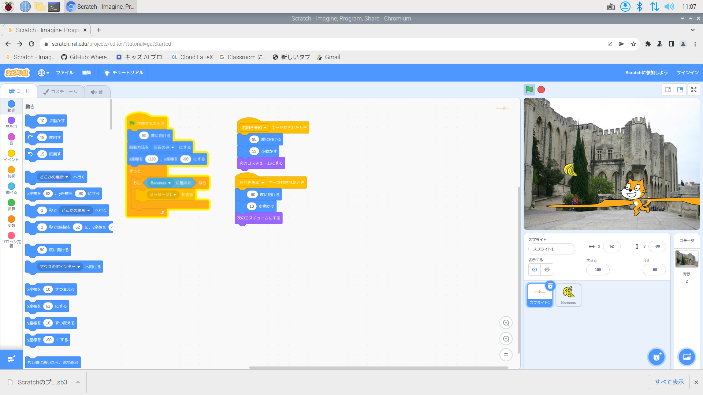

公大高専１年実習I-1レポート
3組8番 柿原倫太郎
第1週目
1-1 サイエンスアート

1.内容
スクラッチとペンを使って様々な色の円を描いた。
2.感想
中学校でもスクラッチを使ったことはありましたが、ペンのようなツールを後から挿入して使うのは初めてでした。すこし手間取る部分もありましたが、とても楽しかったです。
1-2 ゲーム

1.内容
キャラクターを動かし、上から落ちてくる落下物をキャッチするプログラムを作成しました。
2.感想
似たようなゲームは作ったことはありましたが、乱数や変数を使うのは初めてだったのでとても面白かったです。
1-3 ホームページ作成
私のホームページ
1.内容
gitubを使い、自分のホームページを作成しました。
2.感想
まさにプログラミングといった感じで、する前からワクワクしていました。githubが変更を反映するのに時間がかかるようで、すこし焦りもしましたが、うまくできてよかったです。